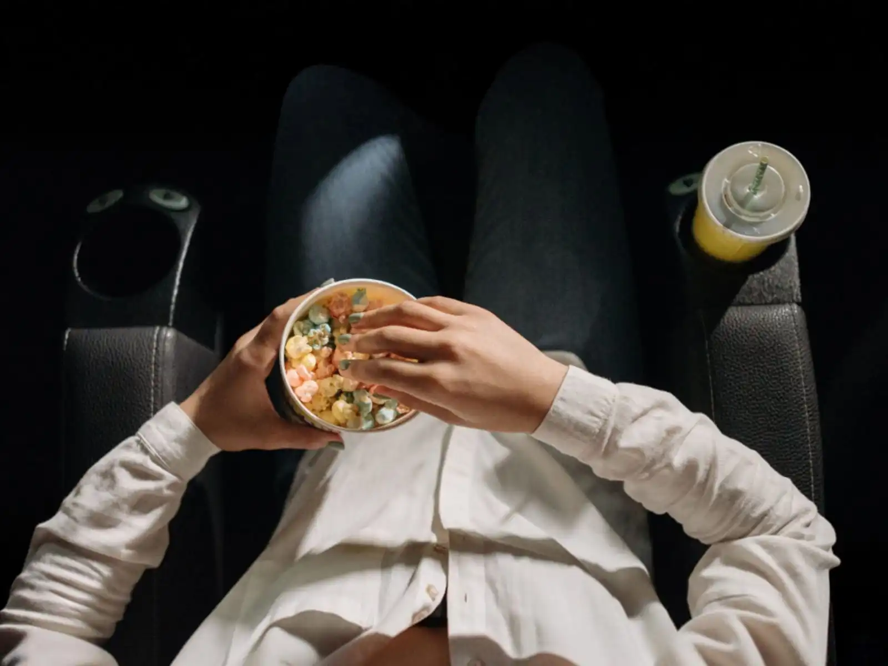
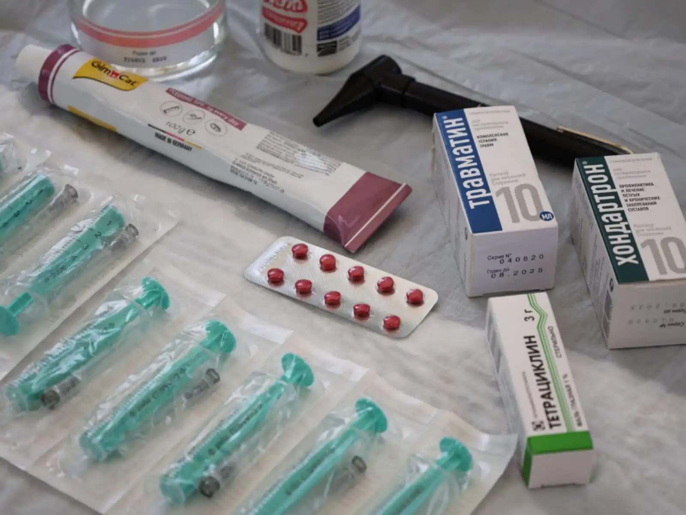

H ay un abismo entre el negocio promedio y la maquinaria de una gran fortuna. Esa diferencia casi siempre se reduce a una sola regla de escala: o mueves millones de unidades a volumen masivo, o cobras lo suficiente por algo tan específico que pocos pueden pagarlo.
Los millonarios entendieron esto a la perfección, y por eso ves ese patrón repetido en los negocios que usan hoy para blindar y potenciar sus ingresos.
Quizá no sea el proyecto con el que amasaron su primer millón ni su fuente principal de dinero, pero diseccionar su estructura nos muestra la lógica real de cómo opera el capital cuando deja de jugar en pequeño.
El objetivo es desglosar con rigor y lógica empresarial los modelos y patrones estructurales que sustentan el flujo de capital de las grandes fortunas. Comprender esta perspectiva permite examinar el mercado con una óptica estrictamente profesional, alejada de las tendencias pasajeras.

Los derechos ocultos detrás de la pantalla
A las grandes fortunas no les interesa producir una película para ganar premios ni salir en las revistas de cine, sino comprar y retener los derechos de propiedad intelectual a largo plazo de catálogos enteros de series, telenovelas o programas de televisión que ya pasaron por su estreno.
Mientras el público cree que el negocio muere cuando termina la transmisión, según un análisis, los inversionistas inteligentes pueden buscar cobrar regalías casi de por vida cada vez que una plataforma de streaming, un canal internacional o una televisora local retransmite ese contenido en cualquier rincón del mundo.
Es un modelo donde no arriesgas tu dinero creando historias desde cero, sino comprando catálogos ya probados que generan dinero de forma automática mes tras mes, aprovechando el hambre voraz de contenido que tienen las pantallas globales.
Cuando el catálogo explota y paga por siempre: Un caso histórico clarísimo es el de la saga original de Halloween o películas independientes de terror clásico como La noche de los muertos vivientes.
Sus creadores invirtieron muy poco capital inicial, pero estructuraron la propiedad de los derechos de forma milimétrica. Al convertirse en clásicos de culto, esas producciones pasaron a formar parte de catálogos que se licencian año tras año para canales de televisión, plataformas de streaming y formatos físicos en todo el planeta.
Los dueños de esos derechos perciben ingresos constantes, casi en algunas ocasiones de por vida, sin mover un solo dedo, el mercado global siempre necesita rellenar parrillas de programación con contenido ya probado y que guste a una audiencia.
1. Cuando el negocio inicial fracasa, pero la propiedad genera caja oculta: En la otra cara de la moneda están producciones como The Terminator original o películas de serie B que en su estreno de taquilla pasaron sin pena ni gloria o dejaron ganancias moderadas para los estudios.
Sin embargo, los inversores que compraron los derechos secundarios o las librerías de distribución a bajo costo descubrieron que el verdadero negocio no estaba en la boletería del cine, sino en las reposiciones interminables en cable y la venta de licencias internacionales a largo plazo.
Una película que comercialmente fue un fracaso de taquilla puede convertirse en una mina de oro silenciosa si el fondo o el inversor privado adquiere su propiedad intelectual por monedas y la monetiza de manera implacable durante décadas.
El negocio silencioso de las patentes y el diseño industrial
A los millonarios de este sector no les interesa fundar la próxima gran marca global ni competir en las tiendas contra gigantes asiáticos, sino diseñar la solución técnica o la mejora mecánica que a esas mismas multinacionales no se les ocurre inventar.
Agarran un problema físico de un producto existente una bisagra que se rompe, un sistema de enfriamiento para baterías, una ergonomía distinta para un casco o un mecanismo de plegado para un dispositivo móvil, desarrollan la ingeniería, registran la patente a nivel internacional y le venden los derechos exclusivos o la patente completa a un gigante chino o japonés que produce por millones.
Es un negocio donde arriesgas poco capital porque todo se hace en un taller o mesa de dibujo, pero cuando aciertas, el cheque por la transferencia de la patente podría representar cifras altas en forma de pago.
Y cuando sale mal, la pérdida económica es mínima porque solo quemaste horas de diseño y unos cuantos prototipos fallidos que nunca llegaron a la línea de ensamblaje masivo.
El riesgo y la recompensa de inventar en la sombra
Cuando el tiro acierta, la ganancia es brutal porque no estás cobrando por una simple idea abstracta, sino por un sistema físico o una patente blindada que una multinacional necesita desesperadamente para ganarle terreno a la competencia.
Un solo diseño acertado de un componente electrónico, un cierre mecánico o una pieza de maquinaria puede venderse por millones de dólares en un único pago de transferencia, o estructurarse mediante regalías por cada millar de unidades que salgan de las fábricas asiáticas.
En ese escenario, el creador se sienta a cobrar sin haber puesto un pie en una cadena de montaje ni haber gastado un solo dólar en campañas de marketing masivo.
Por el contrario, cuando la jugada sale mal, el golpe financiero pasa totalmente desapercibido. Como el capital inicial se limitó exclusivamente al desarrollo de ingeniería básica, un par de impresiones 3D y el costo legal del registro de la patente, la pérdida económica se reduce a unos pocos meses de trabajo y a unos cuantos dólares en prototipos fallidos que terminan en la basura.
No hay deudas bancarias millonarias, no hay inventarios varados en un puerto ni empleados a los que pagarles liquidaciones. El riesgo, como en todas las inversiones, está ahí presente; sin embargo, frente a la asimetría de ganar una fortuna vendiendo una solución, puede parecer una gran opción para muchos millonarios.
La industria invisible detrás de las jugueterías y los coleccionables de edición limitada
A las grandes fortunas no les importa abrir una juguetería de centro comercial ni competir con las grandes cadenas minoristas de plástico barato. El verdadero negocio silencioso está en financiar y estructurar la producción de figuras de colección, juguetes de diseño exclusivo y franquicias de nicho dirigidas exclusivamente a adultos con alto poder adquisitivo.
Mientras la masa gasta dinero en juguetes genéricos de temporada, los inversionistas detrás de marcas de culto compran las licencias de franquicias clásicas de cine, anime o cómics para fabricar tirajes ultra limitados con materiales de alta calidad.
Es un modelo donde la producción se vende por completo en preventa antes de salir de la fábrica gracias a una comunidad dispuesta a pagar cientos o miles de dólares por una sola pieza de plástico y resina, asegurando un margen de ganancia escandaloso desde el primer día y sin arriesgar capital en inventarios acumulados en bodegas.
El riesgo y la recompensa detrás del negocio de la juguetería de alta gama
Cuando el mercado responde y la preventa se agota en minutos, la recompensa financiera es descomunal. Al trabajar con tirajes limitados de quinientas o mil piezas para coleccionistas adultos, el costo de producción por unidad se pulveriza frente al precio de venta final, que suele multiplicarse por diez o veinte gracias a la exclusividad artificial y el valor de la licencia.
Los inversionistas recuperan todo su capital inicial y multiplican las ganancias antes de que el primer contenedor de carga siquiera toque el puerto, viviendo de la reventa secundaria y de futuras series limitadas sin la presión de mantener grandes almacenes llenos de mercancía invendida.
Por otro lado, cuando una apuesta sale mal, el golpe suele venir por el lado de las licencias y las expectativas de la comunidad. Si pagas los derechos de una franquicia que pierde fuerza o el diseño final del coleccionista no cumple con los estándares exigidos por los fanáticos más estrictos, el producto se estanca y la preventa fracasa.
Sin embargo, a diferencia de una juguetería comercial tradicional que se queda con miles de plásticos baratos acumulados en estanterías, aquí el daño financiero es acotado porque los moldes de inyección ya se pagaron y la producción se ajusta al milímetro.
La pérdida se reduce al costo de la licencia y al orgullo golpeado, manteniendo el balance general protegido gracias a la alta rentabilidad de los aciertos previos.
La máquina de imprimir dinero de los artículos de aseo personal de reposición obligatoria
A las grandes fortunas no les interesa inventar una nueva fragancia de lujo ni competir por el glamour efímero de las pasarelas de moda. El verdadero negocio silencioso y masivo está en controlar la fabricación y distribución de artículos de aseo personal de uso diario y reposición obligatoria: rastrillos, espumas de afeitar, desodorantes, cepillos de dientes, enjuagues y seda dental.
A nadie le importa qué marca de hilo dental o rastrillo compra siempre y cuando funcione, pero todo el mundo los necesita todos los días del año, sin importar si hay crisis económica, inflación o recesión global.
Mientras el público persigue modas pasajeras, los inversionistas detrás de estos productos dominan una necesidad biológica y de hábitos arraigados que garantiza que el consumidor vuelva a pasar la tarjeta una y otra vez de forma automática, construyendo una caja fuerte a base de centavos multiplicados por millones de personas.
El riesgo y la recompensa de dominar los hábitos de higiene diaria
Cuando la maquinaria funciona y logras posicionar tus productos en los anaqueles de los supermercados o en las suscripciones recurrentes, la recompensa es un verdadero flujo de caja importante. Como se trata de artículos de consumo obligatorio, el volumen de venta diario es masivo y hasta cierto punto predecible; la gente nunca deja de afeitarse, cepillarse los dientes o usar desodorante.
Los márgenes unitarios de producción son bajísimos al fabricar por millones, lo que permite acumular ganancias constantes que sostienen y financian cualquier otro proyecto de inversión más ambicioso que el inversor tenga en la mira.
Por el contrario, el riesgo principal en este sector no es que el producto falle, sino la brutal guerra de distribución y los costos monstruosos de entrada. Competir contra los gigantes históricos que llevan décadas controlando las grandes cadenas de supermercados exige un capital inicial gigantesco destinado a logística, acuerdos de exclusividad en góndolas y campañas publicitarias masivas para convencer al consumidor de cambiar de marca en algo tan rutinario.
Si tu producto no logra moverse con suficiente velocidad, el inventario se acumula, los márgenes se erosionan por los costos de almacenamiento y los grandes distribuidores te terminan sacando del juego sin piedad.

El negocio masivo detrás de los medicamentos de alivio común y venta libre
A las grandes fortunas no les interesa meterse en laboratorios de biotecnología compleja ni financiar vacunas experimentales de alto riesgo. El verdadero negocio inteligente y masivo en este sector está en respaldar y posicionar fármacos de venta libre y alivio común para la vida diaria: analgésicos para el dolor de cabeza, pastillas para la tos, fórmulas para la gripa o antiácidos estomacales.
A nadie le importa qué marca de ibuprofeno o jarabe compra siempre y cuando le quite el malestar de inmediato, pero cuando medio país amanece engripado o con dolor de cabeza, la demanda de estos productos se dispara de golpe en cada farmacia de la esquina.
Mientras otros buscan ideas rebuscadas, los inversionistas detrás de estos laboratorios medianos dominan una necesidad cíclica y constante, asegurando un flujo de caja que no depende de decisión, sino de urgencia, de forma recurrente cada vez que cambian las estaciones o las épocas de clima pesado.
El riesgo y la recompensa de los medicamentos de alivio común y venta libre
Cuando una marca de analgésicos, pastillas para la gripa o antiácidos se gana la confianza del consumidor y se convierte en el producto predeterminado del botiquín de cada hogar, la recompensa es un flujo de caja sumamente predecible y masivo, aunque no garantizado. Cada vez que cambia el clima, llega la temporada de alergias o media ciudad amanece con dolor de cabeza, las farmacias experimentan picos de venta inmediatos.
Al tratarse de productos de consumo rápido y precio accesible, la rotación en los anaqueles es altísima; el inventario se desplaza solo y genera ganancias constantes sin depender de modas pasajeras ni de tecnologías que queden obsoletas el próximo año.
Por otro lado, el riesgo principal en este mercado radica en la saturación de los anaqueles y el peso de los gigantes farmacéuticos que llevan décadas dominando las farmacias. Introducir un nuevo analgésico o jarabe exige una inversión inteligente y sostenida en distribución, permisos sanitarios y campañas de marketing para convencer a la gente de probar algo distinto en un momento donde la salud y el malestar no están para experimentos.
Si el producto no logra posicionarse con rapidez en el punto de venta, los costos de colocación y el espacio en estanterías se comen los márgenes, dejando claro que competir en el mercado de alivio masivo requiere tanta estrategia comercial como precisión en la fórmula.
Como hemos visto, el capital sofisticado suele moverse de otra manera: busca negocios capaces de vender grandes volúmenes de productos que las personas necesitan de forma recurrente, o construye activos que pueden generar ingresos durante años, como una patente, un sistema o un catálogo con demanda.
Copiar estos modelos no sirve de nada, sino se entiende qué hay detrás de ellos con la mayor precisión. La escala, la distribución, la invención y la capacidad de resolver una necesidad concreta pueden convertir una operación de inversión en un negocio de gran alcance.
Cuando una empresa se construye sobre esas bases, el resultado depende menos de la improvisación y más de lo que el mercado habla.
Publicado originalmente el 14 Ene 2026. Este análisis forma parte de la colección permanente de estudios sobre riqueza, emprendimiento y mentalidad empresarial.